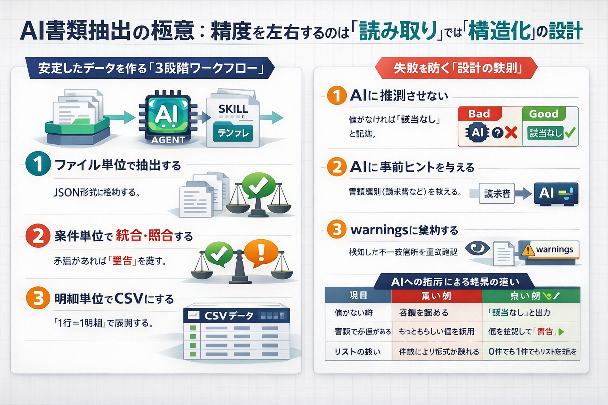

もう「アプリ」を作らなくていい。Skill運用実験
課題が出るたびにUIから作る流れを見直し、相談→整理→次の一手を回すためのSkill運用へ切り替えた実験の記録です。

取り組み内容
- 課題を文章で投げ、対話しながら論点を整理する。
- 整理手順をテンプレ化し、同系統の相談に再利用する。
- 完成品を急がず、再現できる相談の型を残す。
得られた効果
- アプリ実装前でも初速を出しやすくなった。
- 状況変化に合わせてテンプレ文面を素早く更新できた。
- 毎回つまずく論点が可視化され、改善点を抽出しやすくなった。
運用上の学び
- Skillを増やしすぎると選択コストが上がるため、入口を絞る。
- 冒頭に前提チェックを入れ、速さ優先での論点ズレを防ぐ。
詳細は note 記事で公開しています。運用ルールと改善プロセスを継続更新中です。